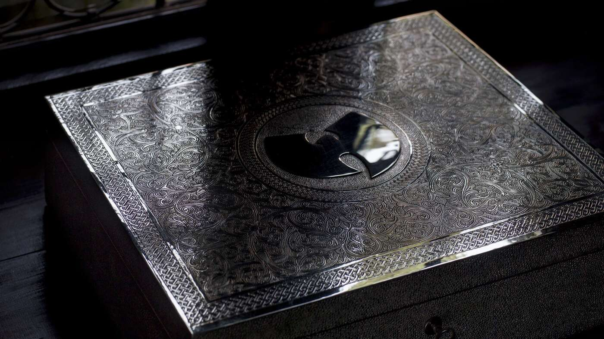
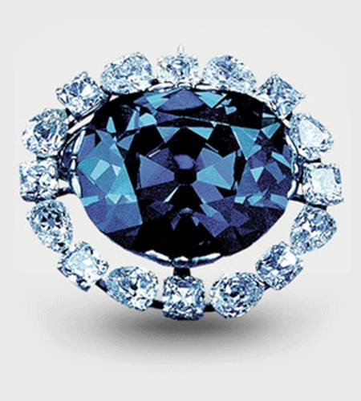

Across the World
The world is big, people across time with their own lives and history, understanding it all is not possible for a human. However the collection of knowledge and such over time is part of what makes us human

The Wakizashi
The Wakizashi is a japanese sword small in size, popularized by the legendary swordsman Musashi, who held it in his off hand as a side weapon
Learn MoreOne of a Kind Album
The East Coast US rap group Wutang Clan made an album with no copies called Once Upon a Time in, this unheard music was obtained by the US Government and sold off to pay a debt owed
 Learn MoreThe Hope Diamond
The Hope Diamond first found in India was a massive gem with a long history, being passed around royalty in Europe it eventually ended up in the hands of the Smithsonian Museum and became a massive attraction
 Learn More